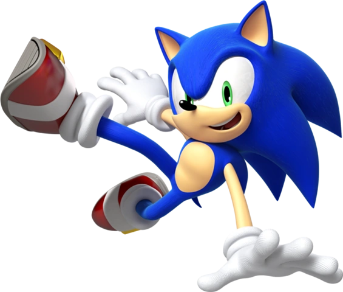

Sonic the Hedgehog é uma franquia de jogos eletrônicos de plataforma criada por Yuji Naka e Naoto Oshima da equipe Sonic Team, da Sega, sendo atualmente administrada por Takashi Iizuka. O primeiro jogo da série Sonic, lançado em 1991, foi concebido pela divisão da Sega, Sonic Team após um pedido para um novo mascote. O título foi um sucesso, e foi renovado para várias sequelas, que levaram a Sega a liderança no rumo dos consoles de video-game da era 16-bit do começo até a metade dos anos 90.[1] Atualmente, é uma das franquias mais famosas e mais lucrativas da indústria dos videogames.[2] A franquia é protagonizada por Sonic, o Ouriço, que normalmente junto com seus amigos como a raposa Tails e o equidna Knuckles, tem que parar os planos de dominação mundial do vilão Dr. Eggman.
